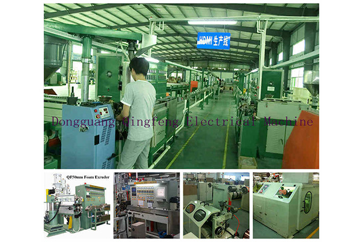

Regular Inspection and Maintenance of Extruders
Every operator should understand that reducing the frequency of inspection and repair of the extrusion machine, cutting the frequency of part replacement, and increasing the service life of the extrusion machine are the key concrete measures for lowering the cost of plastic products and improving economic returns. The equipment being able to work in its best condition for a long time, with stable plastic quality and output, is the basic condition for ensuring that a manufacturing enterprise obtains relatively high profits.
Operators who work conscientiously in accordance with the safety operating procedures and are dedicated and responsible provide the best maintenance and care for the equipment. Therefore, before new workers come on duty, they must learn and memorize the safety operating procedures of the extrusion machine; only after passing the operating process assessment can they officially come on duty and operate independently.
The extrusion machine should be inspected and maintained on a regular basis:
To work independently and become a qualified extrusion machine production operator, the following matters require attention:
1. At shift handover, remind the next shift of the problems caused by this shift's production line equipment and hand over the details clearly; keep proper handover records of the shift's total output, product quality and the safety tools used in production.
2. At shift takeover, after completing the handover procedures, first check the production quality of the equipment, inspect the quality of the raw materials used for manufacturing, and check the quantity of materials in the extrusion machine hopper. If any problem is found, report it to the supervisor immediately.
3. Check whether the barrel and process control temperature of the extrusion machine is within the manufacturing standard processing temperature range. It may be adjusted moderately according to the product quality and your own practical operating experience.
4. Walk a full lap around the production line equipment and check the working condition of each transmission part while the equipment is running; see whether the rotation is stable and normal, listen for any abnormal noise at work, and check whether the heating position temperature works normally.
5. Look at the gauges to check the main motor working voltage and the ammeter needle on the actual operation control cabinet; at this time the ammeter pointer should be within the normal rated voltage value range.
6. Production is running normally, with the extrusion machine screw rotating steadily and the plastic products being delivered at uniform, stable speed from the machine; from time to time, check the appearance quality of the equipment, or take some products to check whether the various indicators of the equipment are qualified.
7. In the event of a sudden power failure during work, immediately turn off the power switches of the main motor, electric heating and feeding system, and turn the variable speed switch knobs to the zero position. When the power supply is restored, first heat the barrel; after the processing temperature is reached, hold the temperature for a period of time. Manually turn the motor drive belt to test the resistance of the screw rotation; if it is relatively easy to turn, run the motor at low speed and start working. If the ammeter pointer exceeds the rated voltage value or the screw speed ratio is unstable, stop immediately, find out the cause (possibly the material temperature in the barrel is low), investigate the fault cause according to the rules and eliminate it before restarting.
8. If the machine is stopped for a long time or production is suspended, and the material inside the barrel is a polyolefin-based raw material, it does not need to be removed. If the barrel contains acrylic resin or other materials, then the material in the barrel must be removed; then disassemble the screw and remove the adhered material from the screw and the barrel; after the finished products in the screw and barrel are cleaned, apply a layer of rust preventive, wrap the screw, and hang it vertically in dry, well-ventilated conditions.
